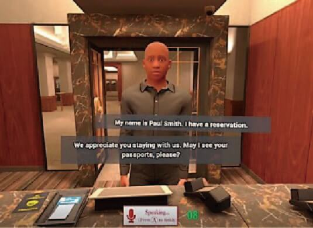

VR for Workplace Communication
In the workplace, companies may be wondering how to improve communication skills among team members while using VR to assist with that. Many common workplace issues aren’t because business premises are poor, but are due to workers lacking in soft skills – particularly effective communication.
How to Improve Communication Skills With VR Customer Service Training Simulations
One way in which a company can learn how to improve workplace communication is by using VR simulations. VR creates scenarios in which employees get practice with their customer service skills.
The pressures of having a customer react emotionally to a situation can leave employees questioning how to respond. Many people do not have the skills of remaining calm under pressure, diffusing situations, or active listening. Being able to find a solution to a problem while remaining calm in a heated moment is essential.
VR comes into play here. Employees can practice engaging with difficult clients through a VR headset or laptop. It allows them to role-play different scenarios. Employees learn how to engage personably with fictional avatars without risking real-life clients.
These training programs provide tips for better communication for employees. They gain a similar learning experience as a real scenario would offer.
This type of training leads to increased customer satisfaction. It helps decrease handling times and with significant conflict resolution improvement.
VR for Public Speaking
The idea of making a presentation or giving a speech brings people back to high school speech class. The fear of what your peers will think and if you’ll make your talking points creeps over before a presentation.
With VR simulations, employees can face their fears without judgment. Different simulators put you in a situation where you’ll present to an office or crowd of people. You can adjust the settings to where the audience reacts based on the performance the employee gives.
Avatars enthuse or look bored from your speech. The assignment given may be to collect data and from that come up with a story or explain a product. This is a sure way to gain the confidence needed to present a business proposal, speech, or pitch an idea.
Different things like keywords, body language, and tone are analyzed by AI to offer comprehensive feedback. This lets employees think on their feet. It nudges them to be confident in their professional abilities with tangible feedback offered to them.